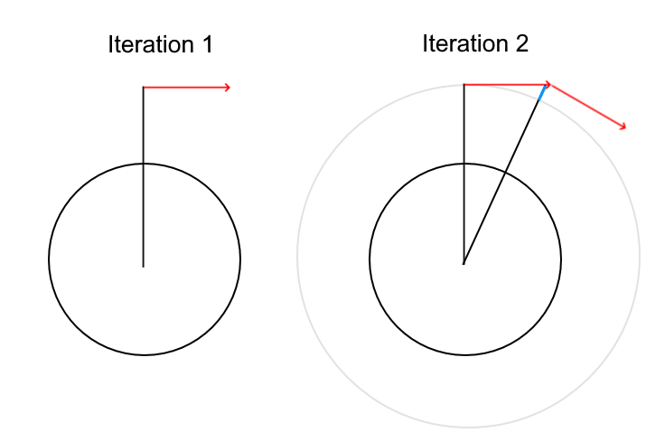

<div class="container">
    <p>
        Theis' simulation har nogle upræcisheder. Dette skyldes, at
        implementationen, ikke følger en kurve, men i stedet skubber satelliten
        imod dets relative "højre" normalvektor retning hver iteration, ganget
        med tiden mellem tidligere og nuværende iteration. Det vil sige at jo
        mindre iterationer den har, jo mindre præcis bliver den, da dens
        definition af højre kun er opdateret efter en iteration er færdiggjort.
        Det betyder at selv med mange iterationer per sekund, vil den eventuelt
        drifte væk.
    </p>
    
</div>
